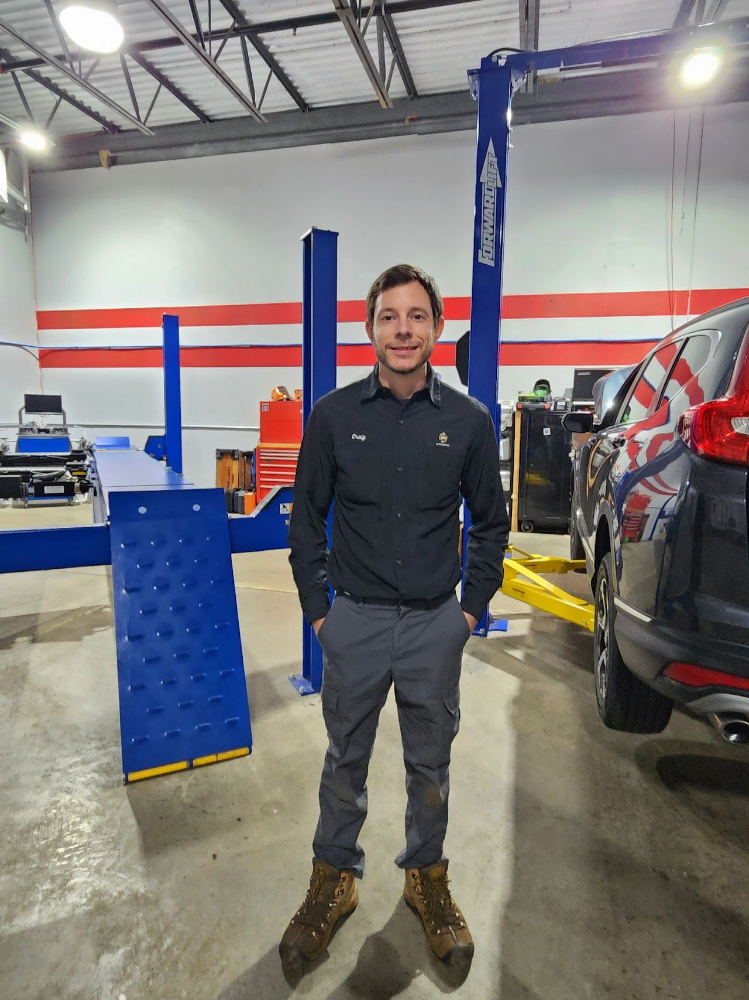

Welcome to AUTOMASTERS
(763) 251-8323 | 20998 134th Ave N suite 108, Rogers, MN 55374
About AUTOMASTERS
Craig W.
OWNER, ASE MASTER CERTIFIED TECHNICIAN

Craig, Owner and Founder of AUTOMASTERS is an ASE Master Certified Technician has been repairing cars for 20 years in the automotive industry. Craig since young, has an affinity for motorsports and cars in general. He truly enjoys the mechanics, electronics, and computers in cars. He furthered his interest by attending WyoTech in Blairsville, PA. and graduated with Degree in Automotive Technology and Automotive Business Management. Prior to starting AUTOMASTERS in 2023, Craig had worked many years as a Lead Technician for SUBARU Dealerships and Independently Owned repair shops, rising to the level of Master Certified Technician.
Craig and his team at AUTOMASTERS are committed and strive to provide automotive repair services with Integrity, Precision and Quality work!
In his free time, Craig enjoys being with his wife, Stephanie and their 2 kids. He also loves hiking, fishing and camping with his family.